Look at this fruit. Is it an orange or a grapefruit? Well, I know that grapefruits are generally bigger and redder.
My thought process is something like this: I have a graph in my mind.
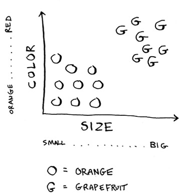
Generally speaking, the bigger, redder fruit are grapefruits. This fruit is big and red, so it’s probably a grapefruit. But what if you get a fruit like this?
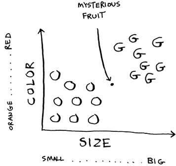
How would you classify this fruit? One way is to look at the neighbors of this spot. Take a look at the three closest neighbors of this spot.
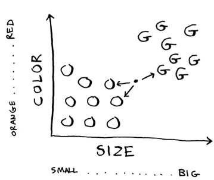
More neighbors are oranges than grapefruit. So this fruit is probably an orange. Congratulations: You just used the k-nearest neighbors (KNN) algorithm for classification! The whole algorithm is pretty simple.
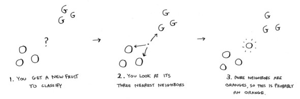
The KNN algorithm is simple but useful! If you’re trying to classify something, you might want to try KNN first. Let’s look at a more real-world example.
Suppose you’re Netflix, and you want to build a movie recommendations system for your users. On a high level, this is similar to the grapefruit problem!
You can plot every user on a graph.
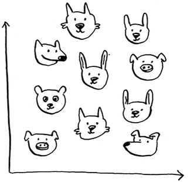
These users are plotted by similarity, so users with similar taste are plotted closer together. Suppose you want to recommend movies for Priyanka. Find the five users closest to her.
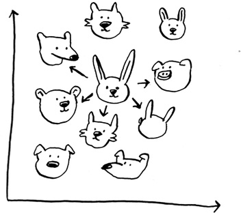
Justin, JC, Joey, Lance, and Chris all have similar taste in movies. So whatever movies they like, Priyanka will probably like too!
Once you have this graph, building a recommendations system is easy. If Justin likes a movie, recommend it to Priyanka.
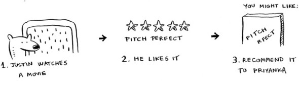
But there’s still a big piece missing. You graphed the users by similarity. How do you figure out how similar two users are?
In the grapefruit example, you compared fruit based on how big they are and how red they are. Size and color are the features you’re comparing. Now suppose you have three fruit. You can extract the features.
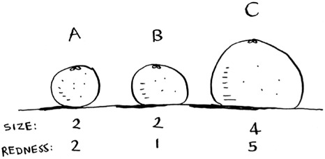
Then you can graph the three fruit.
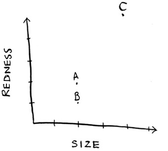
From the graph, you can tell visually that fruits A and B are similar. Let’s measure how close they are. To find the distance between two points, you use the Pythagorean formula.
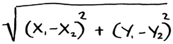
Here’s the distance between A and B, for example.
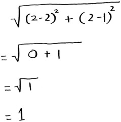
The distance between A and B is 1. You can find the rest of the distances, too.
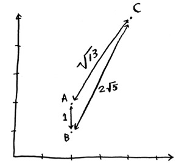
The distance formula confirms what you saw visually: fruits A and B are similar.
Suppose you’re comparing Netflix users, instead. You need some way to graph the users. So, you need to convert each user to a set of coordinates, just as you did for fruit.
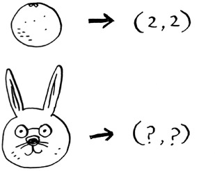
Once you can graph users, you can measure the distance between them.
Here’s how you can convert users into a set of numbers. When users sign up for Netflix, have them rate some categories of movies based on how much they like those categories. For each user, you now have a set of ratings!
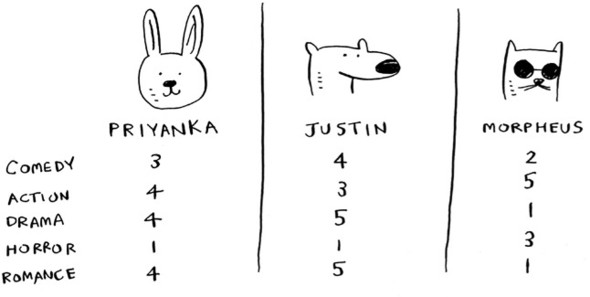
Priyanka and Justin like Romance and hate Horror. Morpheus likes Action but hates Romance (he hates when a good action movie gets ruined by a cheesy romantic scene). Remember how in oranges versus grapefruit, each fruit was represented by a set of two numbers? Here, each user is represented by a set of five numbers.
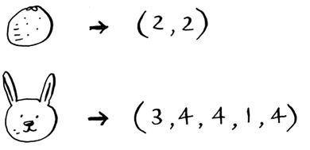
A mathematician would say, instead of calculating the distance in two dimensions, you’re now calculating the distance in five dimensions. But the distance formula remains the same.
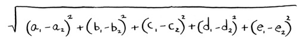
It just involves a set of five numbers instead of a set of two numbers.
The distance formula is flexible: you could have a set of a million numbers and still use the same old distance formula to find the distance. Maybe you’re wondering, “What does distance mean when you have five numbers?” The distance tells you how similar those sets of numbers are.
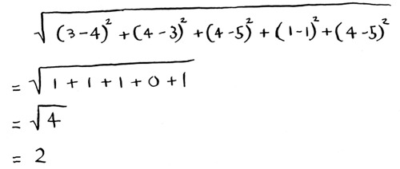
Here’s the distance between Priyanka and Justin.
Priyanka and Justin are pretty similar. What’s the difference between Priyanka and Morpheus? Calculate the distance before moving on.
Did you get it right? Priyanka and Morpheus are 24 apart. The distance tells you that Priyanka’s tastes are more like Justin’s than Morpheus’s.
Great! Now recommending movies to Priyanka is easy: if Justin likes a movie, recommend it to Priyanka, and vice versa. You just built a movie recommendations system!
If you’re a Netflix user, Netflix will keep telling you, “Please rate more movies. The more movies you rate, the better your recommendations will be.” Now you know why. The more movies you rate, the more accurately Netflix can see what other users you’re similar to.
In the Netflix example, you calculated the distance between two different users using the distance formula. But not all users rate movies the same way. Suppose you have two users, Yogi and Pinky, who have the same taste in movies. But Yogi rates any movie he likes as a 5, whereas Pinky is choosier and reserves the 5s for only the best. They’re well matched, but according to the distance algorithm, they aren’t neighbors. How would you take their different rating strategies into account?
Suppose Netflix nominates a group of “influencers.” For example, Quentin Tarantino and Wes Anderson are influencers on Netflix, so their ratings count for more than a normal user’s. How would you change the recommendations system so it’s biased toward the ratings of influencers?
Suppose you want to do more than just recommend a movie: you want to guess how Priyanka will rate this movie. Take the five people closest to her.
By the way, I keep talking about the closest five people. There’s nothing
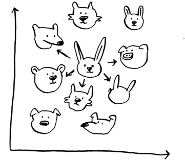
special about the number 5: you could do the closest 2, or 10, or 10,000. That’s why the algorithm is called k-nearest neighbors and not five-nearest neighbors!
Suppose you’re trying to guess a rating for Pitch Perfect. Well, how did Justin, JC, Joey, Lance, and Chris rate it?
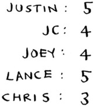
You could take the average of their ratings and get 4.2 stars. That’s called regression. These are the two basic things you’ll do with KNN—classification and regression:
Regression is very useful. Suppose you run a small bakery in Berkeley, and you make fresh bread every day. You’re trying to predict how many loaves to make for today. You have a set of features:
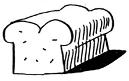
And you know how many loaves of bread you’ve sold in the past for different sets of features.
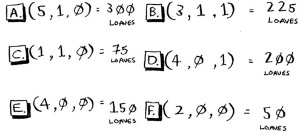
Today is a weekend day with good weather. Based on the data you just saw, how many loaves will you sell? Let’s use KNN, where K = 4. First, figure out the four nearest neighbors for this point.
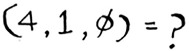
Here are the distances. A, B, D, and E are the closest.
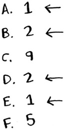
Take an average of the loaves sold on those days, and you get 218.75. That’s how many loaves you should make for today!
So far, you’ve been using the distance formula to compare the distance between two users. Is this the best formula to use? A common one used in practice is cosine similarity. Suppose two users are similar, but one of them is more conservative in their ratings. They both loved Manmohan Desai’s Amar Akbar Anthony. Paul rated it 5 stars, but Rowan rated it 4 stars. If you keep using the distance formula, these two users might not be each other’s neighbors, even though they have similar taste.
Cosine similarity doesn’t measure the distance between two vectors. Instead, it compares the angles of the two vectors. It’s better at dealing with cases like this. Cosine similarity is out of the scope of this book, but look it up if you use KNN!
To figure out recommendations, you had users rate categories of movies. What if you had them rate pictures of cats instead? Then you’d find users who rated those pictures similarly. This would probably be a worse recommendations engine, because the “features” don’t have a lot to do with taste in movies!
Or suppose you ask users to rate movies so you can give them recommendations—but you only ask them to rate Toy Story, Toy Story 2, and Toy Story 3. This won’t tell you a lot about the users’ movie tastes!
When you’re working with KNN, it’s really important to pick the right features to compare against. Picking the right features means
Do you think ratings are a good way to recommend movies? Maybe I rated The Wire more highly than House Hunters, but I actually spend more time watching House Hunters. How would you improve this Netflix recommendations system?
Going back to the bakery: can you think of two good and two bad features you could have picked for the bakery? Maybe you need to make more loaves after you advertise in the paper. Or maybe you need to make more loaves on Mondays.
There’s no one right answer when it comes to picking good features. You have to think about all the different things you need to consider.
Netflix has millions of users. The earlier example looked at the five closest neighbors for building the recommendations system. Is this too low? Too high?
KNN is a really useful algorithm, and it’s your introduction to the magical world of machine learning! Machine learning is all about making your computer more intelligent. You already saw one example of machine learning: building a recommendations system. Let’s look at some other examples.
OCR stands for optical character recognition. It means you can take a photo of a page of text, and your computer will automatically read the text for you. Google uses OCR to digitize books. How does OCR work? For example, consider this number.
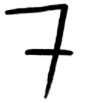
How would you automatically figure out what number this is? You can use KNN for this:
It’s the same problem as oranges versus grapefruit. Generally speaking, OCR algorithms measure lines, points, and curves.
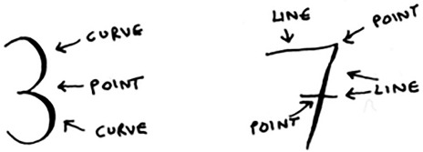
Then, when you get a new character, you can extract the same features from it.
Feature extraction is a lot more complicated in OCR than the fruit example. But it’s important to understand that even complex technologies build on simple ideas, like KNN. You could use the same ideas for speech recognition or face recognition. When you upload a photo to Facebook, sometimes it’s smart enough to tag people in the photo automatically. That’s machine learning in action!
The first step of OCR, where you go through images of numbers and extract features, is called training. Most machine-learning algorithms have a training step: before your computer can do the task, it must be trained. The next example involves spam filters, and it has a training step.
Spam filters use another simple algorithm called the Naive Bayes classifier. First, you train your Naive Bayes classifier on some data.
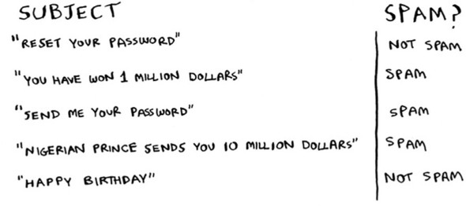
Suppose you get an email with the subject “collect your million dollars now!” Is it spam? You can break this sentence into words. Then, for each word, see what the probability is for that word to show up in a spam email. For example, in this very simple model, the word million only appears in spam emails. Naive Bayes figures out the probability that something is likely to be spam. It has applications similar to KNN.
For example, you could use Naive Bayes to categorize fruit: you have a fruit that’s big and red. What’s the probability that it’s a grapefruit? It’s another simple algorithm that’s fairly effective. We love those algorithms!
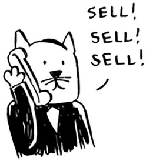
Here’s something that’s hard to do with machine learning: really predicting whether the stock market will go up or down. How do you pick good features in a stock market? Suppose you say that if the stock went up yesterday, it will go up today. Is that a good feature? Or suppose you say that the stock will always go down in May. Will that work? There’s no guaranteed way to use past numbers to predict future performance. Predicting the future is hard, and it’s almost impossible when there are so many variables involved.
I hope this gives you an idea of all the different things you can do with KNN and with machine learning! Machine learning is an interesting field that you can go pretty deep into if you decide to: